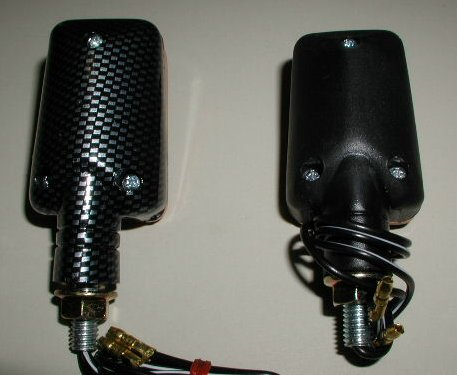

Mini Stalk Turn Signals
Set of Two
The current price for the set of black body signals (part # 17-100110) is
$14.95,
and the set of carbon fiber body signals (part # 17-100111) is
$18.95,
as of
02/12/21.
 These turn signals come in a set of two and are a scaled-down version of the GSXR turn
signals with 8mm mounting stud, two wires and 12 volt single filament bulb.
These extra small size turn signals come with amber lens, measures 2" x 1/2" and are perfect
for custom applications.
These turn signals come in a set of two and are a scaled-down version of the GSXR turn
signals with 8mm mounting stud, two wires and 12 volt single filament bulb.
These extra small size turn signals come with amber lens, measures 2" x 1/2" and are perfect
for custom applications.
Replacement bulbs (part # 17-100110/B) are available for
$1.99
each.

This picture shows the difference between the carbon fiber body and the black body. The carbon fiber is on the left.

This picture shows the turn signals mounted on the back of a Commando
with a custom tail light assembly.
 Note:
Note:The Mini Stalks come with a smaller bullet terminal than the standard Lucas bullet terminals. If you want the Mini Stalks to
plug into your stock wiring harness, you'll need to replace these -- see
Lucas Bullet Type Terminal and Installation.
Return to Old Britts home page
….. Our Products, Ordering
Norton Parts…..
Lamps, Direction Indicators
This page was written and designed by F. H. Eaton
& Associates if you have any questions or comments please
contact us at infon@fheaton.com